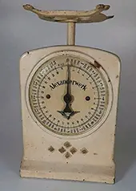
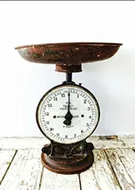
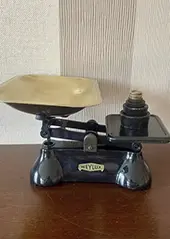
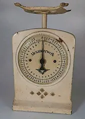
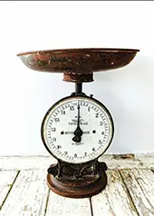
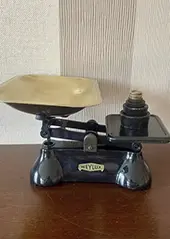

Diese alten Waagen sind faszinierende Zeitzeugen vergangener Handwerkskunst und Alltagskultur. Ob aus Messing, Gusseisen oder Holz gefertigt, jedes Stück überzeugt durch sein robustes Design und den liebevollen Details, die einen einzigartigen Charme ausmacht.
Perfekt als dekoratives Highlight, Sammlerstück oder stillvolles Accessoire in der Küche, Laden oder Wohnraum, vereinen antike Waagen Ästhetik, Geschichte und Funktion auf besondere Weise.
Bei uns ist jedes Stück ein Unikat und gibt es deswegen nur einmal. Dennoch haben wir im Moment eine Auswahl an alten Waagen bei uns im Laden, da sich die Auswahl aber ständig verändern kann, bitten wir euch, immer wieder vorbeizuschauen